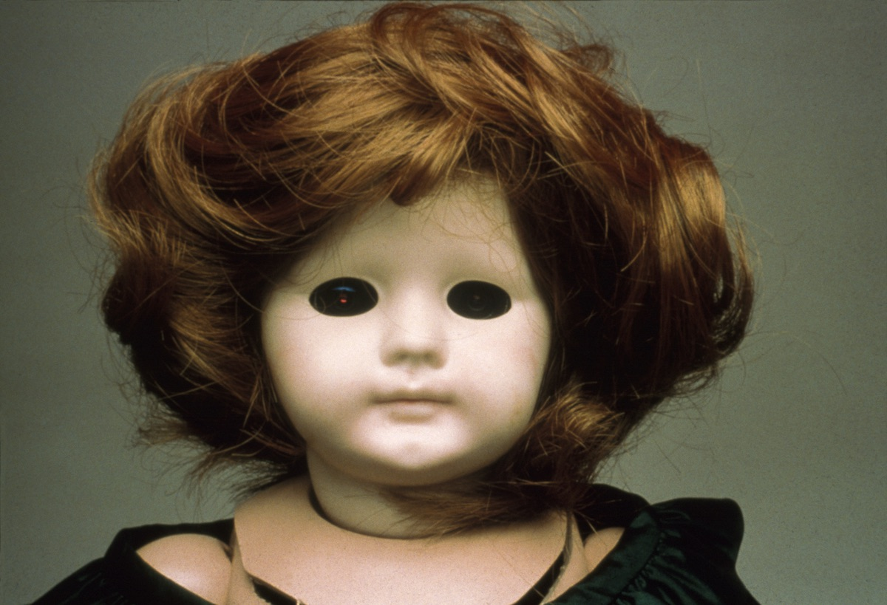
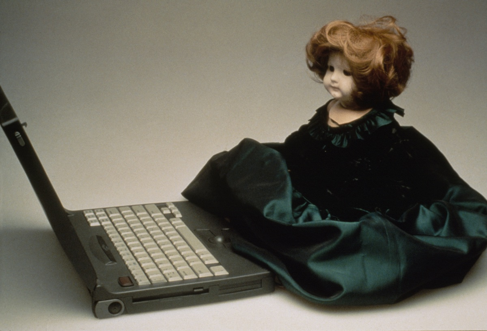
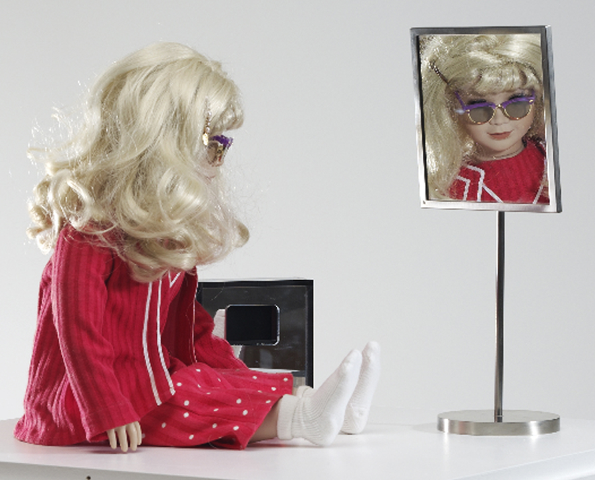
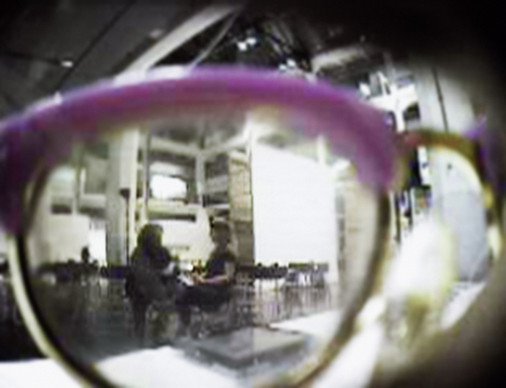

the dollie clone series (1995 - 1998)
lynn hershman leeson
custom-made dolls, clothing, glasses, webcam, surveillance cameras, telerobotic head rotating system
22 x 8 x 8 in


surveil.
be a voyeur.
objectify your viewer.
reject passivity.
artificially constructed female identity.

tillie the telerobotic doll
lynn hershman leeson
‘Tillie is the older sibling. Her birth was slow and painful. However, the brain could not be duplicated into a family of humanoids that could be fleshed out through the Net’


cyberoberta
lynn hershman leeson’s
“When the dollie clones were born, I thought to convert Roberta, who had been exorcised about five years earlier,
and have her re-emerge as this kind of evil twin that would steal information from Tillie when they were in some proximity.”
Leeson adopted many personalities, notably
Roberta Breitmore,
who she felt the need to exorcise in 1978. She lived as Roberta between 1973 and 1978, even creating an ID, having therapist
appointments, and public interactions.
“Moments: A History of Performance in 10 Acts” (2012)
An
exhibition
at ZKM in collaboration with MoMA in Munich, Germany. Traced the milestones in the history of performance art beginning in the 1960s onwards. This image was captured during this exhibition through CybeRoberta's 'eyes.' The curation focused on "women who have consciously been thematizing, transgressing and critiquing the genre boundaries... they likewise reflect on the implicit male constructions of the gaze and the gestural logic of their colleagues."
two identically programmed sisters
images captured through their eyes
webpage users able to swivel the dolls' heads
dolls as agents, not objects
Created shortly after the birth of
Dolly the sheep.
Tillie and CybeRoberta are two telerobotic dolls designed by Lynn Hershman Leeson. Both dolls are identically programmed and referred to as "sisters," their webpafes invite the viewers to participate. User may click on the dolls' eyes via their webpage, this interaction causes the dolls' heads to swivel to the left or right. The dolls stream their surroundings through a webcam feed that is refreshed every 30 seconds, mimicking live surveillance.
Despite this user interaction, The Dollie Clones are not passive. Their feed is occasionally interrupted by abstracted images of their technological bodies, effectively subverting the control of the viewers.
The dolls challenge the passive view of the female identity, the viewer is being surveilled as they watch the dolls. This piece interweaves surveillance, voyeurism, and agency.
Rooted in Leeson's performance work, particularly her persona Roberta Breitmore. This work explores themes of constructed identity, control, and the cyborg. The dolls act as both the subject and the object, emphasizing how the female identity is shaped, observed, and manipulated in both physical and digital spaces.
By blurring the liens between the observer and the observed, the clones become agents, however they remain in systems of remote control. This leads to the question: what does agency truly mean is a networked, surveilled world?